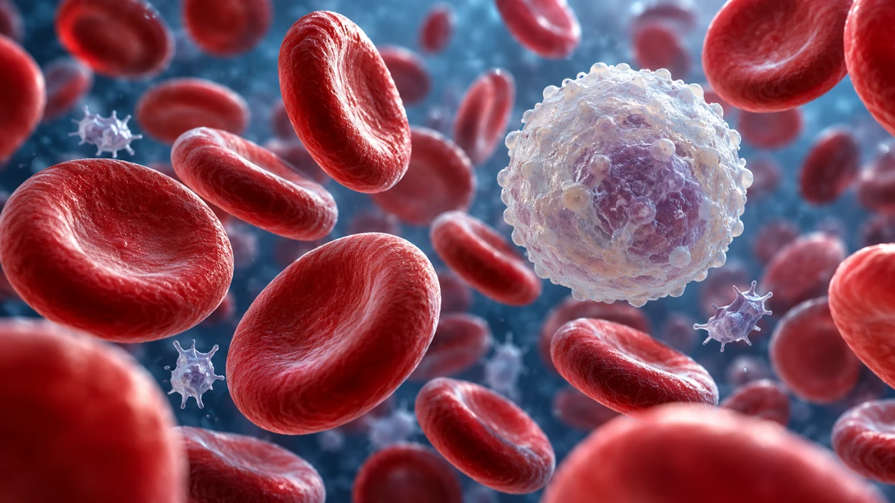

What can you understand before you know the diagnosis?
MEDLEX / SAPPHIRE
Haematology
Interactive lesson29 slides · explore, recall, explain
 MedLexTHE LANGUAGE OF MEDICINE
MedLexTHE LANGUAGE OF MEDICINE Healthcare Crown Academy
Healthcare Crown AcademyMEDLEX / BATCH 03
Haematology
Learn the words, trace the relationships and explain the clinical meaning with precision.
29 slidesExplore · recall · applySapphire

MEDICAL TERMINOLOGY HAEMATOLOGY / 02
One report. Three clues.
What can you understand before you know the diagnosis?
Anaemia
A term about oxygen-carrying capacity.
Leukopenia
A term about the white cell count.
Thrombocytopenia
A term about platelet numbers.
What pattern do you notice?
Each term points to a blood component or a change. Today you will decode these patterns and then confirm the clinical meaning.
MEDICAL TERMINOLOGY HAEMATOLOGY / 03
Your route through the lesson
Understand the system, decode the words, apply the meaning.
Understand the system, decode the words, apply the meaning.
By the end, you should be able to break down common terms, explain key abbreviations, and translate a short haematology report into plain English.
MEDICAL TERMINOLOGY HAEMATOLOGY / 04
A living transport system
Haematology studies blood, blood-forming tissues and their disorders.
Haematology studies blood, blood-forming tissues and their disorders.
Transport
Red cells carry oxygen using haemoglobin.
Defence
White cells support immune responses.
Haemostasis
Platelets and clotting proteins help limit blood loss.
Plasma is the liquid environment carrying cells and dissolved substances.
Source desk
[1] ASH · Blood Basics ↗MEDICAL TERMINOLOGY HAEMATOLOGY / 05
Inside a tube of blood
Select a layer to explore a simplified centrifuged sample.
Select a layer to explore a simplified centrifuged sample.
Whole blood
Plasma plus the formed elements.
Plasma ≠ serum
Clotting changes the specimen. Serum lacks fibrinogen and has altered levels of factors consumed during clotting.
Diagram not to scale. Proportions vary.
Source desk
[21] OpenStax · Blood overview ↗MEDICAL TERMINOLOGY HAEMATOLOGY / 06
Where blood cells begin
Haematopoiesis means blood cell formation.
Haematopoiesis means blood cell formation.
Simplified lineage map. Erythropoietin (EPO), mainly from the kidneys, supports red cell production.
MEDICAL TERMINOLOGY HAEMATOLOGY / 07
The word-part toolkit
Colour identifies the grammatical role. Labels carry the same information.
Colour identifies the grammatical role. Labels carry the same information.
PREFIX · Violet
Modifies the meaning.
pan- = all
ROOT · Teal
Names a structure or concept.
cyt/o = cell
SUFFIX · Gold
Often identifies a condition or process.
-penia = deficiency
Pancytopenia: reduced red cells, white cells and platelets. A word-part translation starts the explanation. Clinical usage completes it.
MEDICAL TERMINOLOGY HAEMATOLOGY / 08
Roots you will keep seeing
Tap a card after you have recalled its meaning.
Tap a card after you have recalled its meaning.
haem/o · haemat/o Think, then flip ↻ Blood. US forms: hem/o, hemat/o.
erythr/o Think, then flip ↻ Red. Example: erythrocyte.
leuk/o Think, then flip ↻ White. Example: leukocyte.
thromb/o Think, then flip ↻ Clot. Used in platelet terms too.
cyt/o Think, then flip ↻ Cell. Example: cytopenia.
myel/o Think, then flip ↻ Bone marrow or spinal cord. Context matters.
lymph/o Think, then flip ↻ Lymph or lymphatic tissue.
phleb/o Think, then flip ↻ Vein. Example: phlebotomy.
Source desk
[2] MedlinePlus · Word Parts ↗MEDICAL TERMINOLOGY HAEMATOLOGY / 09
Endings that change the meaning
Hover or focus for emphasis. Click to reveal the example.
Hover or focus for emphasis. Click to reveal the example.
-cyte · cell
Erythrocyte: a red blood cell.
-penia · deficiency
Leukopenia: a low white blood cell count.
-cytosis · increased cell number
Thrombocytosis: an increased platelet count.
-lysis · breakdown
Haemolysis: destruction of red blood cells.
-poiesis · formation
Haematopoiesis: blood cell formation.
-aemia / -emia · blood condition
Bacteraemia: bacteria in the bloodstream. The suffix alone does not mean infection.
MEDICAL TERMINOLOGY HAEMATOLOGY / 10
Build a term, then translate it
Read the ending first, then identify the cells involved.
Read the ending first, then identify the cells involved.
Reveal the clinical meaning
A platelet count below the relevant reference interval. The word identifies a finding, but does not tell you its cause.
Combining vowels often link roots. They may be dropped before a suffix beginning with a vowel, as in haemat/o + -uria → haematuria (drop the combining o).
MEDICAL TERMINOLOGY HAEMATOLOGY / 11
Two spellings. One concept.
British and American variants both appear in medical literature.
British and American variants both appear in medical literature.
| British English | American English | Meaning |
|---|---|---|
| haematology | hematology | Study of blood |
| haemoglobin | hemoglobin | Oxygen-carrying protein |
| anaemia | anemia | Low haemoglobin for the relevant context |
| haemolysis | hemolysis | Red cell destruction |
| leukaemia | leukemia | A group of blood cell cancers |
Use one style consistently in your own writing. Recognise both when reading.
MEDICAL TERMINOLOGY HAEMATOLOGY / 12
Erythrocytes: the oxygen carriers
A red cell is a biconcave disc. Haemoglobin is the protein inside it.
A red cell is a biconcave disc. Haemoglobin is the protein inside it.
Erythrocyte ≠ haemoglobin
The cell carries the protein. A cell count and a haemoglobin concentration measure different things.
Reticulocyte
An immature red cell. Its count helps assess the marrow’s response.
MEDICAL TERMINOLOGY HAEMATOLOGY / 13
Anaemia describes a finding
Use haemoglobin and the appropriate clinical context.
Use haemoglobin and the appropriate clinical context.
Definition
Haemoglobin concentration below the relevant cutoff.
Context
Cutoffs vary with age, sex and pregnancy. Measurement and altitude also matter.
WHO issued updated haemoglobin cutoff guidance in March 2024. Use the relevant population guidance and local laboratory information.
Does anaemia always mean iron deficiency?
No. Iron deficiency is one cause. Blood loss, reduced production and increased red cell destruction are broader mechanisms. A low Hb result does not identify the cause.
MEDICAL TERMINOLOGY HAEMATOLOGY / 14
The morphology vocabulary
These descriptors concern red cell appearance or indices.
These descriptors concern red cell appearance or indices.
Microcytic
Smaller average red cell volume.
Normocytic
Average red cell volume within the relevant interval.
Macrocytic
Larger average red cell volume.
MCV = mean corpuscular volume. Anisocytosis describes variation in size. Poikilocytosis describes variation in shape.
Hypochromia describes reduced red cell colour / haemoglobinisation. Morphology suggests possibilities, not a diagnosis.
MEDICAL TERMINOLOGY HAEMATOLOGY / 15
Related disorders, distinct meanings
Open each term for the clinical idea.
Open each term for the clinical idea.
Haemolysis
Red cell destruction. It may occur in the body or in a collected specimen, where it can interfere with laboratory results.
Sickle cell disease
Inherited haemoglobin disorders involving HbS. Red cells can become rigid and sickle, contributing to haemolysis and blocked blood flow.
Thalassaemia
Inherited disorders with reduced production of alpha or beta globin chains, affecting haemoglobin formation.
Erythrocytosis
An increased red cell concentration. This finding does not by itself establish polycythaemia vera, a specific myeloproliferative neoplasm.
MEDICAL TERMINOLOGY HAEMATOLOGY / 16
Leukocytes: one name, several roles
A differential separates the white cell types.
A differential separates the white cell types.
Neutrophils
Rapid innate defence.
Lymphocytes
Adaptive immunity and other immune functions.
Monocytes
Phagocytosis and immune coordination.
Eosinophils
Parasite responses and allergic inflammation.
Basophils
Allergic and inflammatory signalling.
Leukocyte means white blood cell. A total WBC count and a differential answer different questions.
Source desk
[6] MedlinePlus · Blood Differential ↗MEDICAL TERMINOLOGY HAEMATOLOGY / 17
Count changes are not diagnoses
Compare the finding with the disease name.
Compare the finding with the disease name.
Leukocytosis
Increased white blood cell count. Several causes are possible.
Leukopenia
Decreased white blood cell count.
Neutropenia
Decreased neutrophil count. A normal total WBC can conceal a low neutrophil count.
Is leukocytosis the same as leukaemia?
No. Leukaemia is a group of cancers affecting blood cells. The WBC count may be high, normal or low. Classification requires more than a count.
MEDICAL TERMINOLOGY HAEMATOLOGY / 18
Platelets and haemostasis
Haemostasis is the process that limits bleeding.
Haemostasis is the process that limits bleeding.
Vessel response
The injured vessel constricts.
2Platelet plug
Platelets adhere, activate and aggregate.
3Fibrin support
Coagulation generates fibrin that stabilises the plug.
Simplified sequence. These processes interact and overlap.
Haemostasis or haemolysis?
Haemostasis limits bleeding. Haemolysis means red cell destruction. Similar beginnings can conceal very different meanings.
MEDICAL TERMINOLOGY HAEMATOLOGY / 19
Bleeding and clotting vocabulary
Select a term to distinguish the process.
Select a term to distinguish the process.
Thrombocytopenia
Low platelet count.
Thrombocytosis
High platelet count.
Thrombosis
Formation of a clot within a blood vessel.
Embolus and embolism
An embolus travels through the circulation. Embolism is blockage caused by lodged material, often a clot fragment.
Haemophilia and coagulopathy
Haemophilia usually refers to inherited bleeding disorders involving clotting factor deficiency. Acquired forms also occur. Coagulopathy is a broader term for impaired coagulation.
MEDICAL TERMINOLOGY HAEMATOLOGY / 20
A CBC is a vocabulary map
CBC = complete blood count. FBC = full blood count.
CBC = complete blood count. FBC = full blood count.
RBC
Red blood cell count
Hb / Hgb
Haemoglobin concentration
Hct / PCV
Haematocrit / packed cell volume
MCV
Mean corpuscular volume
MCH
Mean corpuscular haemoglobin
MCHC
Mean corpuscular haemoglobin concentration
WBC
White blood cell count
PLT
Platelet count
Check the units and the reporting laboratory’s reference intervals. A CBC with differential adds information on white cell types.
Source desk
[3] MedlinePlus · Complete Blood Count ↗MEDICAL TERMINOLOGY HAEMATOLOGY / 21
Different questions need different tests
Click a test to learn what the name tells you.
Click a test to learn what the name tells you.
Peripheral blood film / smear
Microscopic examination of blood cells. Describes features that a count alone cannot show.
Reticulocyte count
Measures immature red cells. Helps evaluate red cell production and the response to anaemia.
PT / INR
Prothrombin time measures clotting time in a plasma sample. INR standardises PT results and is commonly used for warfarin monitoring.
aPTT
Activated partial thromboplastin time assesses a different set of coagulation factors. It may be used to monitor unfractionated heparin, depending on local practice.
PT/INR and aPTT are not part of the CBC. Normal results do not exclude every bleeding disorder.
MEDICAL TERMINOLOGY HAEMATOLOGY / 22
Procedures have their own language
Connect the name with the action.
Connect the name with the action.
Venepuncture
Puncturing a vein to obtain access or collect blood. US spelling: venipuncture.
Phlebotomy
Blood collection. In therapeutic phlebotomy, blood is removed for a clinical purpose.
Bone marrow aspiration
Obtaining a liquid marrow sample. A core biopsy obtains a tissue cylinder.
Transfusion delivers blood components. Apheresis separates and collects selected components while returning others.
MEDICAL TERMINOLOGY HAEMATOLOGY / 23
Translate a clinical handover
A fictional example. Identify the finding before considering its cause.
A fictional example. Identify the finding before considering its cause.
“The FBC shows low Hb with a low MCV. WBC and platelets are within this laboratory’s reference intervals. A blood film and reticulocyte count are requested.”
1 · Translate the abbreviations
Full blood count, haemoglobin, mean corpuscular volume and white blood cell count.
2 · Name the pattern
Anaemia with microcytosis: low haemoglobin with a small average red cell volume.
3 · What remains unknown?
The cause. Microcytosis alone does not establish iron deficiency. The history and further tests guide interpretation.
MEDICAL TERMINOLOGY HAEMATOLOGY / 24
Three terms to untangle
Explain the distinction before opening each answer.
Explain the distinction before opening each answer.
Thrombocytopenia vs thrombosis Think, then flip ↻ A low platelet count versus a clot forming inside a vessel.
Haemoglobin vs haematocrit Think, then flip ↻ Protein concentration versus the fraction of blood volume occupied by red cells.
Leukocytosis vs leukaemia Think, then flip ↻ An increased white cell count versus a group of blood cell cancers.
A precise explanation states what the term establishes and what information is still needed.
MEDICAL TERMINOLOGY HAEMATOLOGY / 25
Your turn: decode and explain
Write or say your answer. Then reveal and compare.
Write or say your answer. Then reveal and compare.
Pan + cyt/o + -penia
Pancytopenia: reduced red cells, white cells and platelets.
Haemat/o + -poiesis
Haematopoiesis: blood cell formation.
A low neutrophil count
Neutropenia. This term identifies the affected white cell type.
Large average red cell volume
Macrocytosis. If anaemia is also present, “macrocytic anaemia” describes the pattern.
A request for aPTT
Activated partial thromboplastin time: a coagulation assay, separate from the CBC.
A report with “haemolysed specimen”
Red cells have broken down in the specimen. This does not by itself establish haemolytic disease in the patient.
MEDICAL TERMINOLOGY HAEMATOLOGY / 26
A routine for unfamiliar terms
A reliable routine for your next unfamiliar term.
A reliable routine for your next unfamiliar term.
01 Identify the suffix and the root.
02 Translate the word parts.
03 Confirm the clinical definition.
04 Check the units and reference interval.
05 Separate the finding from its cause.
Exit ticket · explain pancytopenia in plain English
The red cell, white cell and platelet levels are all reduced. The term names the pattern and does not identify the underlying cause.
After class: recall six terms tomorrow, then revisit the difficult terms later in the week.
Source desk
[14] NCI · Pancytopenia ↗MEDICAL TERMINOLOGY HAEMATOLOGY / 27
References & resources
Authoritative resources checked 19 October 2026. Page dates vary.
Authoritative resources checked 19 October 2026. Page dates vary.
https://www.hematology.org/education/patients/blood-basics
https://medlineplus.gov/appendixa.html
https://medlineplus.gov/lab-tests/complete-blood-count-cbc/
WHO · Haemoglobin cutoffs guideline (2024)
https://www.who.int/publications/i/item/9789240088542
https://www.nhlbi.nih.gov/health/anemia
https://medlineplus.gov/lab-tests/blood-differential/
https://medlineplus.gov/lab-tests/reticulocyte-count/
Original teaching diagrams. Generated cover artwork is conceptual. The 2024 WHO guideline is a dated publication, not a claim that every linked page was published in 2026.
Source desk
01 ASH · Blood Basics https://www.hematology.org/education/patients/blood-basics ↗ ↗02 MedlinePlus · Word Parts https://medlineplus.gov/appendixa.html ↗ ↗03 MedlinePlus · Complete Blood Count https://medlineplus.gov/lab-tests/complete-blood-count-cbc/ ↗ ↗04 WHO · Haemoglobin cutoffs guideline (2024) https://www.who.int/publications/i/item/9789240088542 ↗ ↗05 NHLBI · Anaemia https://www.nhlbi.nih.gov/health/anemia ↗ ↗06 MedlinePlus · Blood Differential https://medlineplus.gov/lab-tests/blood-differential/ ↗ ↗07 MedlinePlus · Reticulocyte Count https://medlineplus.gov/lab-tests/reticulocyte-count/ ↗ ↗MEDICAL TERMINOLOGY HAEMATOLOGY / 28
References continued
Authoritative resources checked 19 October 2026. Page dates vary.
Authoritative resources checked 19 October 2026. Page dates vary.
https://www.nhlbi.nih.gov/health/platelet-disorders
https://www.nhlbi.nih.gov/health/bleeding-disorders
https://www.nhlbi.nih.gov/health/clotting-disorders
https://medlineplus.gov/lab-tests/prothrombin-time-test-and-inr-ptinr/
https://medlineplus.gov/lab-tests/partial-thromboplastin-time-ptt-test/
https://www.cancer.gov/types/leukemia
https://www.cancer.gov/publications/dictionaries/cancer-terms/def/pancytopenia
Original teaching diagrams. Generated cover artwork is conceptual. The 2024 WHO guideline is a dated publication, not a claim that every linked page was published in 2026.
Source desk
08 NHLBI · Platelet Disorders https://www.nhlbi.nih.gov/health/platelet-disorders ↗ ↗09 NHLBI · Bleeding Disorders https://www.nhlbi.nih.gov/health/bleeding-disorders ↗ ↗10 NHLBI · Clotting Disorders https://www.nhlbi.nih.gov/health/clotting-disorders ↗ ↗11 MedlinePlus · PT/INR https://medlineplus.gov/lab-tests/prothrombin-time-test-and-inr-ptinr/ ↗ ↗12 MedlinePlus · PTT https://medlineplus.gov/lab-tests/partial-thromboplastin-time-ptt-test/ ↗ ↗13 NCI · Leukaemia https://www.cancer.gov/types/leukemia ↗ ↗14 NCI · Pancytopenia https://www.cancer.gov/publications/dictionaries/cancer-terms/def/pancytopenia ↗ ↗MEDICAL TERMINOLOGY HAEMATOLOGY / 29
References continued
Authoritative resources checked 19 October 2026. Page dates vary.
Authoritative resources checked 19 October 2026. Page dates vary.
https://www.nhlbi.nih.gov/health/sickle-cell-disease
https://www.nhlbi.nih.gov/health/thalassemia
https://medlineplus.gov/lab-tests/mcv-mean-corpuscular-volume/
https://medlineplus.gov/lab-tests/blood-smear/
https://medlineplus.gov/lab-tests/bone-marrow-tests/
https://www.cancer.gov/publications/dictionaries/cancer-terms/def/apheresis
https://openstax.org/books/anatomy-and-physiology-2e/pages/18-1-an-overview-of-blood
Original teaching diagrams. Generated cover artwork is conceptual. The 2024 WHO guideline is a dated publication, not a claim that every linked page was published in 2026.
Source desk
15 NHLBI · Sickle Cell Disease https://www.nhlbi.nih.gov/health/sickle-cell-disease ↗ ↗16 NHLBI · Thalassaemia https://www.nhlbi.nih.gov/health/thalassemia ↗ ↗17 MedlinePlus · MCV https://medlineplus.gov/lab-tests/mcv-mean-corpuscular-volume/ ↗ ↗18 MedlinePlus · Blood Smear https://medlineplus.gov/lab-tests/blood-smear/ ↗ ↗19 MedlinePlus · Bone Marrow Tests https://medlineplus.gov/lab-tests/bone-marrow-tests/ ↗ ↗20 NCI · Apheresis https://www.cancer.gov/publications/dictionaries/cancer-terms/def/apheresis ↗ ↗21 OpenStax · Blood overview https://openstax.org/books/anatomy-and-physiology-2e/pages/18-1-an-overview-of-blood ↗ ↗ARTWORK & ATTRIBUTION
Teaching imagery combines generated raster artwork and symbols from the supplied Health Icons asset packs. Models and scenes are conceptual teaching aids. They are not diagnostic diagrams or patient images. Source desks retain attribution to OpenStax, Open RN and the clinical publishers used in the original lessons. No source endorsement is implied.
Explore · recall · explain
01 / 29
ONE ANNOTATION STANDARD
Pointer · interact with the lesson← → Navigate · A Tools · F Focus · Esc Exit
LESSON 03 / 08 · 29 SLIDESNext lesson: Endocrine system →